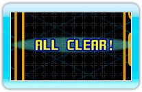

13 |
Technieken |
 |
|
Maak gebruik van de volgende technieken in Tetris Party om bonuspunten te verdienen, en strafblokken naar je tegenstander's veld te sturen.
 Bonuspunten worden gegeven wanneer je 4 lijnen klaart met de I-Tetrimino. Dit is één van de klassieke Tetristechnieken. Bonuspunten worden gegeven wanneer je 4 lijnen klaart met de I-Tetrimino. Dit is één van de klassieke Tetristechnieken.
 Bonuspunten worden gegeven voor opeenvolgende geklaarde lijnen. Je krijgt geen bonuspunten meer als je faalt om opeenvolgende lijnen te klaren. Bonuspunten worden gegeven voor opeenvolgende geklaarde lijnen. Je krijgt geen bonuspunten meer als je faalt om opeenvolgende lijnen te klaren.
Wanneer je alle blokken klaart op het veld krijg je bonuspunten. Deze bonus krijg je niet als je voorwerpen zoals "Lijntrap" gebruikt.
 Een succesvolle keten van "TETRIS", "T-SPIN SINGLE" en "T-SPIN DOUBLE" resulteert in bonuspunten. Als de keten wordt onderbroken door een andere verwijder-techniek (bijvoorbeeld: een normale DUBBEL) krijg je deze bonus niet.
Een succesvolle keten van "TETRIS", "T-SPIN SINGLE" en "T-SPIN DOUBLE" resulteert in bonuspunten. Als de keten wordt onderbroken door een andere verwijder-techniek (bijvoorbeeld: een normale DUBBEL) krijg je deze bonus niet. |


 |
 |
 |